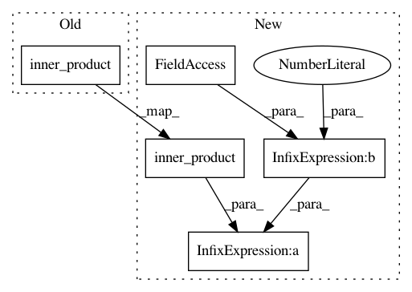

b6b5cb2fe4dabac0b338ce21172f43f10ec0b3da,geomstats/geometry/hyperbolic_space.py,HyperbolicMetric,inner_product,#HyperbolicMetric#Any#Any#Any#,220
Before Change
inner_prod : array-like, shape=[n_samples, 1]
or shape=[1, 1]
inner_prod = self.embedding_metric.inner_product(
tangent_vec_a, tangent_vec_b, base_point)
return inner_prod
def squared_norm(self, vector, base_point=None):
After Change
inner_prod : array-like, shape=[n_samples, 1]
or shape=[1, 1]
inner_prod = self.scale ** 2 * self.embedding_metric.inner_product(
tangent_vec_a, tangent_vec_b, base_point)
return inner_prod
def squared_norm(self, vector, base_point=None):
In pattern: SUPERPATTERN
Frequency: 3
Non-data size: 5
Instances
Project Name: geomstats/geomstats
Commit Name: b6b5cb2fe4dabac0b338ce21172f43f10ec0b3da
Time: 2020-01-16
Author: yann.cabanes@u-bordeaux.fr
File Name: geomstats/geometry/hyperbolic_space.py
Class Name: HyperbolicMetric
Method Name: inner_product
Project Name: geomstats/geomstats
Commit Name: cada59ce5e633487120c0d2fc543202d64f555a4
Time: 2020-01-16
Author: yann.cabanes@u-bordeaux.fr
File Name: geomstats/geometry/hyperbolic_space.py
Class Name: HyperbolicMetric
Method Name: inner_product
Project Name: geomstats/geomstats
Commit Name: abec08f790f64e06697b89884ac7cb9f5d6439ae
Time: 2020-01-17
Author: thomas.l.p.gerald@gmail.com
File Name: geomstats/geometry/hyperbolic_space.py
Class Name: HyperbolicMetric
Method Name: inner_product